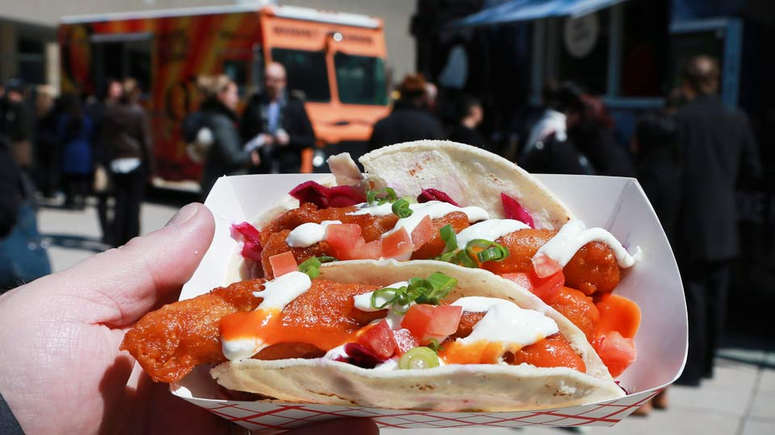

Montreal
Montreal is the metropolis of the province of Quebec. Quebec City is the political capital but Montreal is the cultural and economic capital of Quebec and the main entry point to the province. The second largest city in Canada, it is a city rich in culture and history and a well-deserved reputation as one of the liveliest cities in North America. Montreal is the second-largest French-speaking (as a mother language) city in the world, behind Paris. The population of Montreal is about 1.9 million, with 4 million in the metro area. Montreal is sometimes referred to as The Paris of Canada.
Situated on an island in the St. Lawrence River at the historically highest navigable point, Montreal has been a strategic location since before the arrival of Europeans in Canada. A thriving St.Lawrence Iroquoian town called Hochelaga was on the site of present-day Montreal when explorer Jacques Cartier first visited in 1535. A hundred years later, in 1642, the tiny town of Ville-Marie was founded as a Sulpician mission by Paul Chomedey, sieur de Maisonneuve. It soon became a centre of the fur trade. After its capture by the English in 1762, Montreal remained (until the 1970s) the most important city in Canada and was briefly capital of the province in the 1840s. Prohibition on sales of alcohol in the United States during the 1920s and 1930s made Montreal a mecca for cross-border fun seekers from nearby New England and New York. The city built up a seedy, yet playful, industry in alcohol, burlesque, and other vices. In the 1960s, an urban renewal drive centred around Expo 67. The World's Fair in Montreal brought a subway system and a number of attractive urban parks and is considered to be one of the most successful World Fairs. Over 50 million visitors gathered to Montreal during this memorable summer. The 1976 Olympics left a strikingly idiosyncratic stadium and many other urban improvements. St Lawrence river gateway The opening of the Saint Lawrence Seaway in 1959, though much lauded as an economic boom, spelled the beginning of the end for Montreal's economic dominance in Canada. Once the transition point between western railroads and eastern sea carriers, Montreal watched helplessly as some of this business moved farther west, up the now navigable Seaway, to ports in Ontario and on Lake Superior. The Quebec Sovereignty movement, which began to pick up steam in the 1960s, further chilled the atmosphere for Canada-wide businesses, many of which moved their headquarters to Toronto. Following an economic depression in the 1980s and 1990s, Montreal became more secure in its place in North America and the world. It remains a centre of culture, arts, computer technology, aerospace, the biotech industry, and media for all of Canada.
4 reasons why we love Montreal
1. It has amazing shops

From hipster vintage shops in the Mile End to mainstream retail chains on Sainte-Catherine, Montreal is the place to be when it comes to shopping. Plus, we all know that Montrealers are the most stylish people in Canada.
2. It hosts world-renowned festivals throughout the year
Just for Laughs, Osheaga, and the Montreal Jazz Festival are just a few of Montreal’s internationally known festivals. People from all over the world flock to Montreal during the summer to watch their favourite comedian or listen to some kickass music outdoors.
3. You can find every type of food imaginable
Thanks to the diversity of Montreal mentioned above foodies can find every type of food in Montreal, from Cubano sandwiches to Thai noodles. And of course we can’t forget all of the delicious French-Canadian food like poutine, smoked meat, and Montreal-style bagels. In addition to the diverse range of food, it’s also very reasonably priced compared to the rest of Canada. With its abundance of bring-your-own-wine restaurants and romantic outdoor patios, dining in Montreal is amazing.
4.It’s inexpensive
The cost of living in Montreal is lower than any other major city in Canada. Unlike your friends living in Toronto or Vancouver, three quarters of your paycheck each month won’t have to go towards rent. In addition to rent, public transport, groceries, and education are much less expensive than in the rest of Canada.
Best time to visit Montreal
| Best Time |
| January |
| February |
| March |
| April |
| May |
| June |
| July |
| August |
| September |
| October |
| November |
| December |